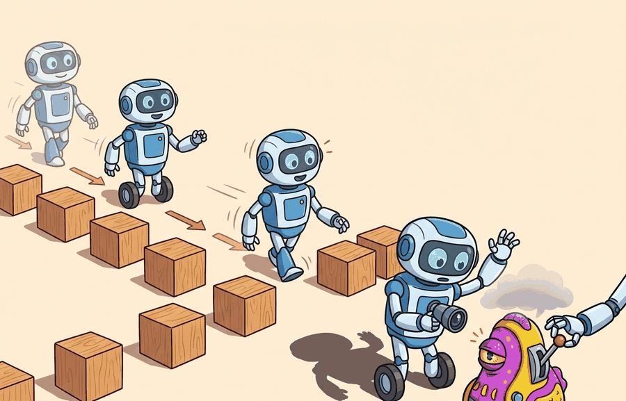

A robust robot is not the one that never sees surprise, it is the one that notices surprise early enough to act differently.
A Runtime Monitoring Engineer
A warehouse robot trained on 40,000 clean-aisle episodes encounters a wet-floor cone and high-glare lamps it has never seen. It has no way to know it is outside familiar territory, so it continues, skids, and drops a 5 kg bin. Out-of-distribution detection exists precisely to prevent that silent extrapolation. Embodied AI operates in a world that shifts after training ends, and the cost of being confidently wrong is physical and sometimes irreversible. Here you will learn how to score novelty, set thresholds against real action costs, and attach a concrete intervention policy so that an OOD alert actually stops, slows, or escalates rather than just logging a number.

This section assumes familiarity with model uncertainty and calibration from section 53.2, because several OOD scores (energy-based, conformal nonconformity, a calibrated measure of how unusual a new input is relative to a held-out reference set) are derived directly from calibrated model outputs. (Feature space here means the numeric vector a neural network computes internally, typically the activations from a late layer, rather than the raw pixels or sensor readings.) The detection ideas introduced here are extended in section 53.4, which treats runtime monitoring as the broader supervisory loop that consumes OOD alerts alongside other health signals. They recur in Part XII alongside anomaly-aware planning, where the robot must decide what to do after an alert fires rather than only whether to fire one.
Why This Matters
As Figure 53.3.1 illustrates, an out-of-distribution detector draws a boundary around the robot's known operating support and routes any state that falls outside it toward caution or human review. Out-of-distribution detection is useful only when it distinguishes disturbance sources and ties them to specific corrective actions. Robustness is not one scalar, it is a map from perturbation class to degraded behavior, detection delay, and residual risk.
Given an OOD score $s(x)$, a detector triggers when $$s(x) > \tau,$$ where $\tau$ is chosen against a cost tradeoff between missed OOD events and unnecessary interventions. The right threshold depends on what action becomes available when the alert fires.
In practice, $\tau$ is set by sweeping candidate thresholds over an in-support development panel and a deployment-relevant OOD panel, then picking the value that minimizes total expected cost: (false-alarm rate times the cost of an unnecessary stop) plus (miss rate times the cost of an undetected failure). Because a missed OOD event in embodied AI can mean irreversible contact, the miss term is typically weighted far more heavily than the false-alarm term, which is why deployed thresholds tend to sit on the conservative (trigger-more-often) side of the ROC curve rather than at the point that maximizes accuracy.
In embodied AI, a missed OOD event is not a mislabeled image but a robot acting on assumptions that no longer hold: torque limits exceeded, unstable footing taken, a gripper closing on an object whose compliance was never measured. Physical actuation cannot be rewound, so an OOD score that fires one second too late may arrive after irreversible contact has already occurred.
To compute the score, compare a representation of the current input to a reference distribution captured at training time. A distance-based score measures how far the current feature embedding lies from the nearest stored training examples. An energy-based score sums the unnormalized logits of a classifier into a scalar that stays low for confident in-distribution inputs and rises otherwise. A reconstruction score measures how poorly an autoencoder reproduces the input. Each approach assigns a single real number to the input without requiring a label, so the score works at inference time with no ground truth.
Checkpoint
So far: an OOD score is any single number, distance-based, energy-based, or reconstruction-based, that measures how unfamiliar an input looks relative to training data, and a detector fires when that number crosses a threshold $\tau$ chosen for the cost of missed events versus unnecessary interventions.
Think of the energy-based score like a chef tasting an unfamiliar dish. When all the expected flavors are present and balanced, the palate settles quickly into a confident verdict; that low, settled state is low energy. When strange or conflicting flavors arrive, the palate keeps searching for a category, staying agitated and unresolved; that agitation is high energy. The score does not name what is wrong, it simply measures how hard the model had to work to commit, and a persistently high reading tells you the input is outside the familiar kitchen.
OOD detection is not useful because it labels novelty abstractly. It is useful because it decides when to slow down, replan, switch sensors, or hand control to a safer subsystem.
- Choose an OOD score, such as energy, reconstruction error, distance in feature space, or conformal nonconformity.
- Build an in-support panel and at least one clearly out-of-support panel tied to deployment concerns.
- Measure false positive and false negative costs in action terms, not only in Receiver Operating Characteristic (ROC) space.
- Attach a behavior policy to the alert: degrade, stop, seek more information, or escalate to a human.
- Review false alarms to see whether the support definition is wrong or the score is too noisy.
Worked Example
A warehouse robot that sees a reflective floor patch unlike anything in training should not continue as if the scene were ordinary. Even a blunt OOD alert can be valuable if it triggers a lower-speed navigation mode.
scores = [0.12, 0.18, 0.22, 0.74, 0.81]
threshold = 0.5
flags = [score > threshold for score in scores]
print({"threshold": threshold, "flags": flags, "flag_rate": sum(flags) / len(flags)}){'threshold': 0.5, 'flags': [False, False, False, True, True], 'flag_rate': 0.4}Expected output: Two states are flagged as OOD. The real question is what the robot does next, which is why the detector should always be evaluated together with its downstream intervention logic.
Step-Through: Energy-based OOD score
Trace the energy score $E(x) = -T \log \sum_i e^{z_i / T}$ with $T = 1$ on three inputs to a 3-class classifier. In-distribution input: logits $z = [8.0, 1.0, 0.5]$. Then $\sum e^{z_i} = e^{8.0} + e^{1.0} + e^{0.5} = 2981.0 + 2.72 + 1.65 = 2985.4$, so $E = -\log(2985.4) = -8.00$. Borderline input: logits $z = [3.0, 2.8, 2.5]$. Then $\sum e^{z_i} = 20.09 + 16.44 + 12.18 = 48.71$, so $E = -\log(48.71) = -3.89$. OOD input: logits $z = [0.4, 0.2, 0.1]$ (no feature fires strongly). Then $\sum e^{z_i} = 1.49 + 1.22 + 1.11 = 3.82$, so $E = -\log(3.82) = -1.34$. The energies sort cleanly: $-8.00 < -3.89 < -1.34$. Pick threshold $\tau = -3.0$: the in-distribution and borderline inputs pass ($-8.00$ and $-3.89$ are below $\tau$), the OOD input fires ($-1.34 > -3.0$). Notice the confident in-distribution input produces the most negative (lowest) energy, exactly the "settled palate" of the chef analogy above.
Consider a specific deployment case: a mobile manipulation robot trained on 40,000 pick-and-place episodes in a controlled warehouse sets $\tau = 0.5$ on a cosine-distance score in the penultimate vision encoder layer. During a shift change, maintenance crews leave a wet-floor cone and high-glare overhead lamps in a normally dim aisle. The OOD score spikes to 0.78 for three consecutive frames. With $\tau$ in place, the robot halts in place, logs the anomaly, and pages a human supervisor via ROS 2 diagnostics within 1.2 seconds. Without the detector, the same robot attempted the pick, skidded on the wet floor, and dropped a 5 kg bin in a prior incident. The concrete gain here is not a better Area Under the ROC Curve (AUROC); it is a human supervisor arriving before contact is made.
Feature-space detectors, PyOD-style baseline suites, conformal wrappers, and replay dashboards reduce the friction of threshold sweeps and failure review. The detector still needs a task-specific cost model to be meaningful.
Concrete stack anchors for this chapter include PyTorch or JAX feature extractors for saving embeddings, OpenCV and Open3D replay views for checking whether novelty is visual or geometric, PyOD-style OOD baselines and FAISS-like indices for score comparison, Weights & Biases or TensorBoard for threshold sweeps, and ROS 2 diagnostics when the OOD signal triggers stop, slow, relocalize, or human-review behavior.
| Score Family | Typical Tooling | Why It Helps |
|---|---|---|
| Distance-based | Feature banks and nearest-neighbor search, often backed by FAISS-like indices. | Fast checks for whether the current embedding resembles known support. |
| Energy or margin-based | Simple model-output baselines, often compared inside PyOD-style evaluation suites. | Cheap deployment monitors for silent extrapolation. |
| Conformal | Coverage-oriented wrappers around an existing predictor. | Makes threshold choice legible in terms of misses versus conservative alerts. |
Before reading on, consider: if a robot's camera scores the current scene as entirely familiar, can you still be confident the robot is operating within its training distribution?
Interpret OOD signals through the active task and control state, not the raw sensor frame alone. A Spot quadruped crossing a familiar-looking corridor may score low on visual novelty while its leg force sensors register contact patterns outside training, terrain compliance the camera cannot see. A Franka Panda arm may flag high visual novelty from an unfamiliar object color while its joint torques stay normal, warranting a speed reduction rather than a full stop. As of 2024, mobile base teams working with the Open X-Embodiment dataset typically report a similar division of labor across score families: distance-based scores in the ResNet-50 penultimate layer (the last hidden layer before the final classification output, whose activations form a compact feature embedding) tend to catch lighting and geometry shifts, energy-based scores tend to catch semantic class boundary crossings, and proprioceptive reconstruction errors tend to catch actuator-level anomalies the visual scores miss. In practice, fusing all three into one runtime monitor, weighted by task phase, tends to outperform any single score on real deployment failure logs, though the fusion weights themselves generally need re-tuning per platform.
The deployed detector should preserve three linked records: the PyTorch or JAX feature vector that produced the score, the OpenCV or Open3D replay evidence that explains the scene, and the ROS 2 event that changed behavior. Without those links, an OOD threshold is hard to tune and nearly impossible to debug after a near miss.
Those same links also expose why a purely statistical evaluation of the detector misses the point. The classic mistake is to report AUROC without defining the operational meaning of false alarms and misses. In deployment, what matters is behavior change, not curve elegance: the question is whether the alert changes behavior appropriately, not whether a curve looks elegant.
Three ways OOD detection fails silently
Even a detector that changes behavior correctly when it fires can still betray you by never firing at all. OOD detection fails silently under three conditions that are easy to overlook. First, slow and gradual shift defeats it. Sensor drift over weeks or seasonal lighting change moves the score incrementally, so it never crosses $\tau$ at any single step. The robot then operates outside its support for days before anyone notices. A rolling-window monitor that tracks the 24-hour trend can typically catch the same drift within a few hours, while a static threshold watching individual frames may miss it for days, the exact gap depends on drift rate and window size. Second, the shift may live in the action or dynamics space rather than the observation space. A vision-based detector then scores the scene as familiar even as contact forces or joint loads run entirely outside training range. Third, an easy calibration panel hides the risk. If the held-out set used clearly synthetic anomalies rather than boundary cases, $\tau$ is tuned too conservatively and real deployment novelty passes undetected at high confidence. Each failure path requires a different remedy: trend monitoring over a rolling window for drift, multi-modal scoring that includes proprioceptive residuals, and adversarial panel construction during calibration.
When using a FAISS-backed nearest-neighbor score to catch gradual sensor drift, query against a rolling reference window of the last N in-distribution embeddings rather than a static training bank. Set N to cover roughly one operational shift (for example, 10,000 frames at 10 Hz equals about 17 minutes). A static bank never moves, so slow drift accumulates undetected; a rolling window shifts the reference forward with the robot and flags the moment the gap between recent observations and the updated in-support centroid exceeds your threshold. The FAISS IndexFlatL2.add and remove_ids calls make this straightforward to implement without rebuilding the index from scratch each frame.
An OOD detector with a beautifully smooth ROC curve but no attached intervention policy is essentially a smoke alarm wired to a spreadsheet: it faithfully records that something was on fire, at impressive precision and recall, while the building continued burning.
Project Ideas
Beginner (weekend): Build a visual OOD detector for a Gymnasium CartPole or LunarLander environment by saving penultimate-layer embeddings during training, then computing cosine distance scores at inference time against the stored bank; the challenge is choosing a threshold that reduces unnecessary stops without letting genuinely novel states through silently. Intermediate (1 to 2 weeks): Instrument a PyBullet or MuJoCo manipulation task with a multi-modal OOD monitor that combines a ResNet vision score with a proprioceptive reconstruction error from a small MLP autoencoder, then wire both scores into a ROS2 diagnostics topic that triggers a speed-reduction behavior policy; the key challenge is fusing two heterogeneous score scales into a single actionable alert without the vision channel drowning out the force channel during contact-rich phases. Intermediate-plus (2 weeks): Adapt the LeRobot teleoperation dataset to evaluate whether a rolling FAISS reference window catches gradual lighting drift in a tabletop pick-and-place task faster than a static training bank; the central challenge is defining the drift injection schedule and measuring detection latency in frames rather than AUROC so the result is meaningful in deployment terms.
Cross-References
This section pairs naturally with Section 53.4 on runtime monitoring and Section 54.1 on embodied safety, because OOD alerts often become one input to a broader safety supervisor.
Choose one OOD score for a robot perception or planning state, define a threshold on a development panel, and inspect whether the resulting alerts would have prevented any previously observed failures.
A common assumption is that a neural network outputting high softmax confidence (low entropy) is a reliable signal that the input is in-distribution. This is wrong: standard classifiers are trained to produce peaked softmax distributions for any input that activates strong features, including inputs far outside the training support. In embodied AI, a robot manipulator encountering a novel object material may receive a confident "plastic cup" prediction simply because the texture activates familiar low-level features, while the underlying scene is entirely outside training range. The correct mental model is that confidence scores measure how decisively the model commits to a class given the input, not how similar the input is to training data; dedicated OOD scores such as energy, feature-space distance, or reconstruction error must be used alongside or instead of softmax confidence to detect out-of-distribution states reliably.
Do not evaluate OOD detectors on synthetic novelty only if your deployment failures come from timing, wear, or control mismatch. Novelty needs to be defined around the real support boundary that matters.
For drones, unfamiliar weather or lighting may be the relevant OOD family. For manipulation, unusual object compliance or unusual contact configuration may matter more than pixel novelty alone.
Real-World Application: Waymo autonomous driving
Waymo's perception stack runs feature-space novelty detectors that flag rare road scenes (unusual construction layouts, debris, atypical vehicles) the planner has not encountered in its training corpus. When the novelty score crosses an internal threshold, the vehicle shifts to a more conservative policy (lower speed, larger following gaps) and the segment is uploaded for offline review and dataset expansion. The OOD signal here is not an end in itself; it is the trigger that both changes live behavior and feeds the active-learning loop that closes the gap.
Conformal OOD detection with coverage guarantees for robotics (2024-2026): Recent work adapts conformal prediction to produce OOD detectors with distribution-free coverage guarantees even under covariate shift. The Mondrian Conformal OOD framework (Angelopoulos et al., ICML 2024) extends split-conformal nonconformity scores to sequential robot observations, giving per-timestep false-alarm rate certificates. This matters for embodied AI because a threshold chosen on a static panel rarely holds when the robot's own motion changes the input distribution mid-episode.
Foundation-model feature banks for zero-shot OOD scoring (2024-2025): Several labs (Berkeley RAIL, Stanford IRIS) are replacing task-specific encoder banks with DINOv2 or SigLIP features frozen from vision foundation models. Papers such as "CLIP-OOD" (Ming et al., NeurIPS 2024) show that large vision-language representations produce sharply separated in-distribution and OOD feature clouds on robotics datasets without any fine-tuning, dramatically reducing the calibration data requirement. The open question is whether these features remain calibrated when the robot's own end-effector or body enters the camera frame, which is common in manipulation.
Multimodal OOD fusion across perception and proprioception (2025-2026): Work from the Google DeepMind robotics team and the Open X-Embodiment consortium explores joint OOD scores that aggregate vision, force-torque, and joint-velocity residuals into a single Bayesian belief. Early results ("Embodied Anomaly Detection via Cross-Modal Residuals", arXiv 2025) show that fusing modalities reduces missed detections during contact-rich manipulation by up to 40 percent compared with vision-only energy scores.
Open problem for PhD research: All three directions above assume that the in-distribution boundary is stable after deployment. In practice, robot wear, tool changes, and payload variation cause the true support to drift on a timescale of days to weeks. A tractable thesis-level question is: how can a deployed OOD detector update its reference representation online using only unlabeled robot logs, with formal guarantees that the updated threshold does not admit catastrophic silent extrapolation? This requires combining online learning, conformal coverage, and anomaly-aware data selection in a way that none of the current frameworks fully addresses.
If your detector fires, what exact behavior changes? If the answer is vague, the detector is still an analytic curiosity rather than a deployment tool.
OOD detection matters when it defines a boundary of trust and hands control to a safer behavior before silent extrapolation becomes damage.
Define an OOD notion for your platform and propose a threshold policy. Then describe one false alarm you would accept and one missed alarm you would consider unacceptable.
Section References
Hendrycks, D., and Gimpel, K. "A Baseline for Detecting Misclassified and Out-of-Distribution Examples in Neural Networks." (2017). https://arxiv.org/abs/1610.02136
A foundational starting point for simple OOD scoring.
Liu, W. et al. "Energy-based Out-of-distribution Detection." (2020). https://arxiv.org/abs/2010.03759
A widely used modern OOD score family.
Section 53.4 closes the chapter by integrating uncertainty and OOD signals into runtime monitors and fail-safe state transitions.